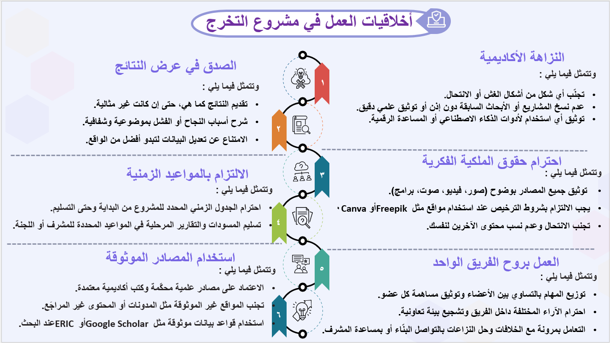
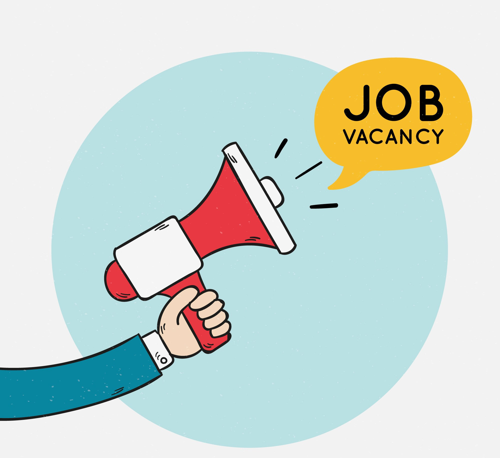
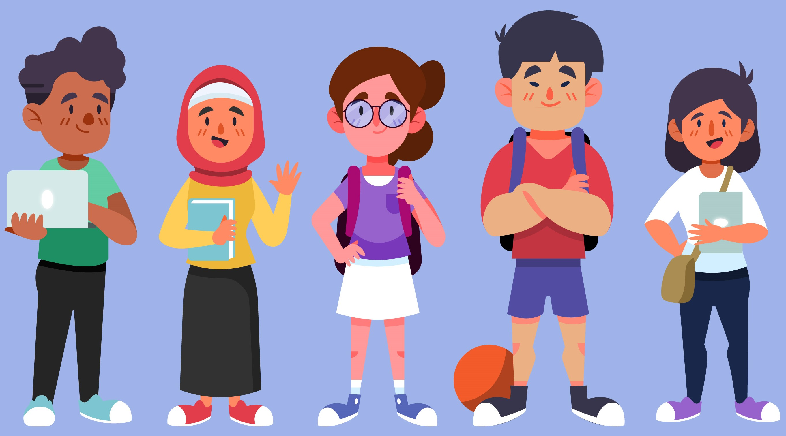
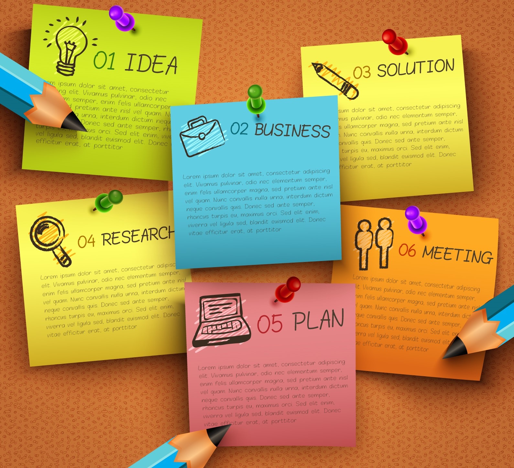
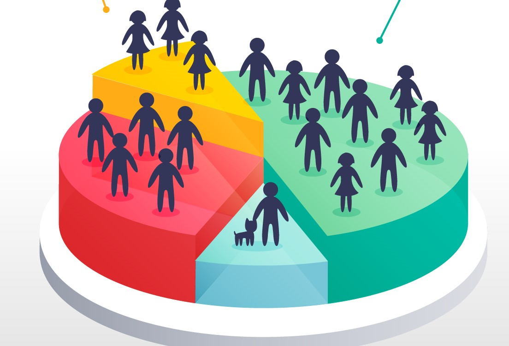
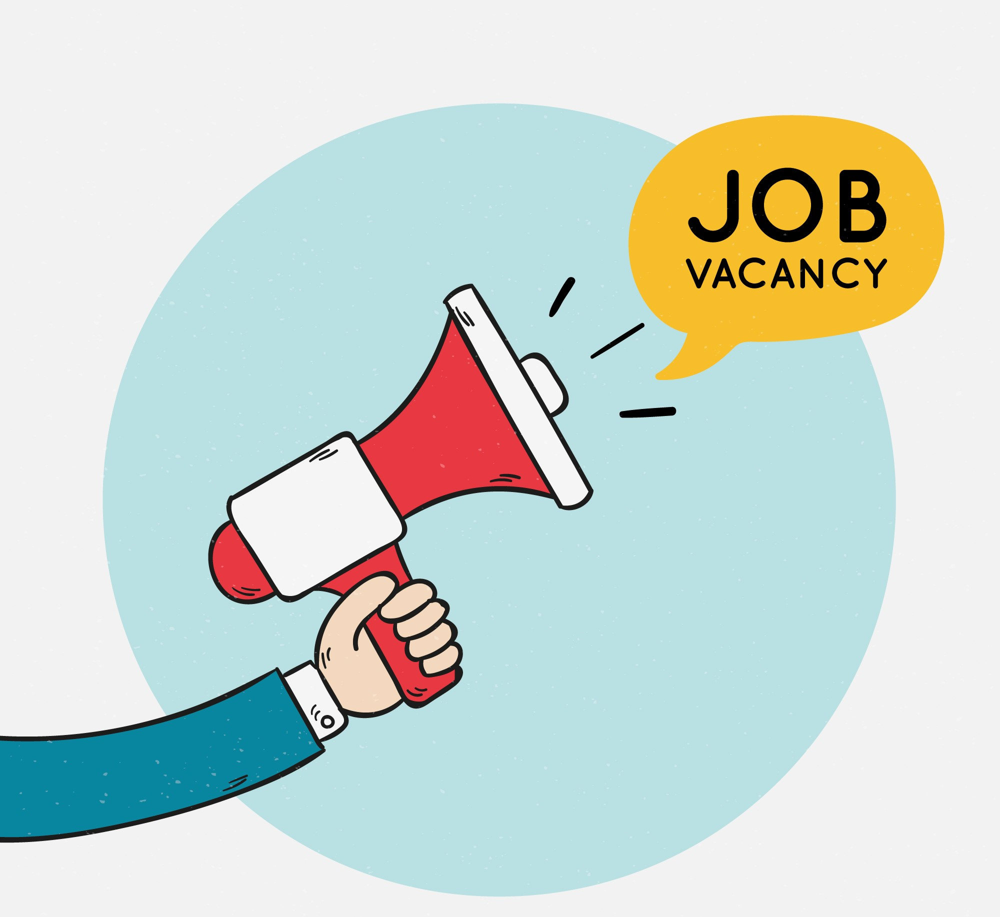

الفيديو التعريفي للموديول الأول
يمكنك مشاهدته من خلال النقر علي الأفاتار
إلمام طالب تكنولوجيا التعليم بأساسيات مشروعات التخرج.
بعد الانتهاء من دراسة هذا الموديول يجب أن يكون طالب تكنولوجيا التعليم قادراً على أن:
1. يذكر مفهوم مشروع التخرج.
2. يحدد أهمية مشروع التخرج.
3. يعدد أهداف مشروع التخرج.
4. يذكر أنواع مشروعات التخرج في تكنولوجيا التعليم.
5. يحدد الشروط الواجب توافرها في مشروع التخرج .
6. يعدد خصائص مشروع التخرج.
7. يحدد المهارات الأساسية اللازمة لإنتاج مشروع التخرج.
8. يحدد أهم النصائح الواجب مراعاتها عند اختيار مشروع التخرج.
9. يميز بين أدوار الأطراف المشاركة في مشروع التخرج.
10. يوضح أهمية الالتزام بأخلاقيات العمل أثناء تنفيذ مشروع التخرج.
11. يوضح علاقة مشروعات التخرج بسوق العمل.
12. يناقش التحديات الشائعة في تنفيذ مشروعات التخرج ويقترح حلولاً لها.
13. يحلل الأخطاء شائعة في مشروعات التخرج.
14. يحلل نماذج واقعية لمشروعات التخرج.
1 . مفهوم مشروع التخرج Graduation project:
مشروع التخرج هو نشاط بحثي أو تطبيقي ينفذه الطلاب في السنة الأخيرة من دراستهم الجامعية، بهدف توظيف المعارف والمهارات المكتسبة لحل مشكلات واقعية أو تقديم خدمات مجتمعية، وتنمية مهارات التفكير النقدي، والعمل الجماعي، وحل المشكلات، والإبداع بما يتوافق مع احتياجات سوق العمل، ويشمل المشروع مراحل متعددة تبدأ باختيار الموضوع، مرورًا بتخطيط البحث أو التطبيق، وصولًا إلى التنفيذ والتقديم النهائي، ويعد مادة دراسية أساسية في السنة النهائية، ويجب أن يكون المشروع جديدًا، ومبتكرًا، وقابلًا للتطبيق العملي، وفق تقييم عضو هيئة التدريس المشرف واللجنة العلمية المختصة، ويُقدّم المشروع في صورته النهائية كمتطلب أساسي لنيل درجة البكالوريوس ( تخصص تكنولوجيا التعليم)، وقد يتخذ شكل دراسة بحثية، أو منتج تعليمي رقمي، أو مزيجًا منهما.
يهدف النشاط إلي: فهم أساسيات ومفاهيم مشروعات التخرج من خلال الملف التالي.
التعليمات:
- اقرأ الملف بعناية.
- اكتب ملحوظة أو سؤال واحد حول أهم ما فهمته.
- يمكنك مشاركة ملحوظتك مع زملائك على البيئة التشاركية المخصصة لكم.
2 . أهمية مشروع التخرج:

🔹 أولًا: الأهمية التعليمية والأكاديمية
- يُعد مشروع التخرج اختبارًا حقيقيًا لقدرات الطالب من خلال تقييم ما اكتسبه من معارف ومهارات.
- يتيح تطبيق المعرفة النظرية في واقع عملي من خلال تحليل المشكلات وتقديم حلول مناسبة.
- يطوّر مهارات البحث والتحليل وينمّي التفكير الناقد والقدرة على اتخاذ القرار والابتكار.
- يعزز الفهم العميق لمجال محدد ويفتح آفاقًا أوسع للموضوعات التخصصية.
- يكشف عن القدرات الفردية للطالب في حل المشكلات باستخدام التقنيات أو تطوير حلول جديدة.

🔹 ثانيًا: الأهمية المهنية وسوق العمل
- يساعد مشروع التخرج الطالب على التهيئة للاندماج في سوق العمل.
- يكسب الطالب مهارات إدارة الوقت من خلال الالتزام بالعمل ضمن جدول زمني محدد.
- يساعد على اكتشاف التوجهات المهنية للطالب واتخاذ قرارات مستنيرة بشأن مستقبله.
- يمثل فرصة لتأسيس مشروع ريادي قد يتطور إلى مشروع تجاري أو خدمة مجتمعية.
- يسهل الانتقال إلى سوق العمل من خلال التدريب على تنفيذ مشروع متكامل.

🔹 ثالثًا: الأهمية السلوكية والشخصية
- ينمّي الثقة بالنفس ويعزز شعور الطالب بالإنجاز وتحمل المسؤولية.
- يشجع على الإبداع والابتكار ويدفع الطالب لتطوير أفكار جديدة بأسلوبه الخاص.
- يعزز قيم الالتزام والانضباط ويعوّد الطالب على العمل المنظم.
- ينمي روح العمل الجماعي، ويكتسب مهارات التعاون والتنسيق مع الفريق.
- يرسّخ روح التنافس الإيجابي ويحفّز الطالب على التميز.
- يدرب الطالب على الاعتماد على الذات في جمع المعلومات وتنظيم العمل.
- يشبع حب الاستطلاع ويوفر فرصة لاكتشاف موضوعات جديدة وتعميق الرغبة في البحث والتعلم.
3 . أهداف مشروع التخرج:
4 . أنواع مشروعات التخرج في تكنولوجيا التعليم:
تتنوع مشروعات التخرج وفقاً لطبيعة المشروع ووفقاً للمنتج التكنولوجي كالتالي:
🔹 أولًا: التصنيف وفقاً لطبيعة المشروع
- المشروع التطبيقي
يركّز على تصميم وتنفيذ منتج تعليمي متكامل يخدم أهداف تعليمية محددة. المنتج قد يكون رقميًا (موقع إلكتروني، تطبيق، لعبة، فيديو تفاعلي) أو ماديًا (حقيبة تعليمية، وسائل تعليمية ملموسة). هذه المشروعات تعطي الطالب فرصة لتوظيف مهارات التصميم التعليمي والإنتاج التكنولوجي معًا، وغالبًا ما تكون نواة لمشروعات يمكن تطبيقها فعليًا داخل الفصول الدراسية.
- مشروع البحث التطبيقي
يجمع بين البحث الأكاديمي والتطبيق العملي. والهدف منه ليس فقط إنتاج منتج تعليمي، وإنما اختبار فاعليته على المتعلمين أو بيئة التعلم. الطالب يقوم بجمع بيانات، تحليل نتائج، واستخلاص توصيات يمكن أن تُفيد الباحثين والممارسين في المجال.
- مشروع التطوير أو التقييم
يركّز على تحسين منتج أو نظام تعليمي قائم أو تقييمه وفق معايير علمية. غالبًا ما يتضمن هذا النوع إعادة تصميم واجهات أو تحديث محتوى أو قياس جودة بيئة موجودة. هذه المشروعات مفيدة للمؤسسات التعليمية لأنها تقدم حلولًا عملية وقابلة للتنفيذ .
- المشروع البحثي النظري
يقتصر على الدراسة النظرية والتحليل الأدبي دون إنتاج منتج تطبيقي. الهدف هو إثراء المعرفة الأكاديمية حول موضوع أو قضية في تكنولوجيا التعليم، مثل استراتيجيات التعليم المدمج أو دور الذكاء الاصطناعي في التعليم.
- مشروع حل المشكلات
يتعامل مع مشكلة واقعية داخل مؤسسة تعليمية ويقترح حلًا تقنيًا أو تربويًا لها. يتطلب هذا النوع مهارات تحليل ميداني، وتوظيف أدوات تكنولوجية لمعالجة القصور أو تحسين الممارسات.
- مشروع الخدمة المجتمعية
يهدف إلى خدمة فئات المجتمع المختلفة باستخدام التكنولوجيا التعليمية. هذا النوع يعزز البُعد الإنساني والاجتماعي للمجال، ويعطي الطلاب إحساسًا بالمسؤولية تجاه قضايا المجتمع.
- المشروعات التشاركية
يتم بالتعاون مع جهات تعليمية أو مجتمعية خارجية. غالبًا ما يُنفَّذ ضمن فرق عمل ويخدم احتياجات حقيقية لهذه المؤسسات، مما يتيح خبرة عملية واقعية للطلاب.
🔹 ثانيًا: التصنيف حسب نوع المنتج التكنولوجي
- مشروعات تصميم الوسائط المتعددة التعليمية
تهدف إلى إنتاج محتوى تعليمي تفاعلي يجمع بين الصوت، الفيديو، الصور، النصوص، والرسوم المتحركة. تساعد هذه المشروعات في توصيل المفاهيم بشكل جذاب وسهل للمتعلمين.
- مشروعات تطوير مواقع تعليمية إلكترونية
تشمل إنشاء مواقع متكاملة تقدم محتوى، أنشطة، واجبات، واختبارات إلكترونية. تتميز هذه المواقع بسهولة الوصول إليها من أي مكان وتخدم عددًا كبيرًا من المتعلمين.
- مشروعات تطبيقات تعليمية للهواتف الذكية
تستهدف تصميم تطبيقات تعمل على أنظمة Android أو iOS، تركّز على التعلم الذاتي والمرن. هذه المشروعات تعكس اتجاهًا حديثًا في التعليم حيث يقضي الطلاب وقتًا طويلًا مع أجهزتهم المحمولة.
- مشروعات أنظمة إدارة التعلم (LMS)
تشمل بناء أو تخصيص منصات تعليمية تدير المحتوى، الأنشطة، وتتبع تقدم المتعلمين.
- مشروعات الواقع الافتراضي والمعزز (VR/AR)
تعتمد على توظيف تقنيات الواقع الافتراضي أو المعزز لتقديم خبرات تعليمية يصعب تحقيقها بالطرق التقليية.
- مشروعات الألعاب التعليمية
تركّز على تحويل المحتوى الدراسي إلى ألعاب أو توظيف عناصر الألعاب في عملية التعلم.
- مشروعات الفيديوهات التعليمية الرقمية
إنتاج فيديوهات تعليمية باستخدام تقنيات مختلفة (شرح مباشر، رسوم متحركة، موشن جرافيك).
- مشروعات بيئات التعلم المدمج
تجمع بين الحضور الفعلي والدراسة الإلكترونية عبر الإنترنت.
- مشروعات أدوات التقييم الإلكتروني
تركّز على تصميم اختبارات إلكترونية ذكية قادرة على التصحيح الآلي وتحليل نتائج المتعلمين. هذه المشروعات تساعد في متابعة تقدم الطلاب بشكل فوري وتحسين عملية التقويم.
- مشروعات تصميم الحقائب التعليمية الرقمية
حقيبة تعليمية متكاملة تحتوي على ملفات وموارد رقمية تغطي موضوعًا محددًا، وتُستخدم في تدريب المعلمين أو المتعلمين. تتضمن عادةً كتيبًا إرشاديًا، عروضًا، فيديوهات، وأنشطة تفاعلية.
- مشروعات الذكاء الاصطناعي وتعلم الآلة في التعليم
توظف تقنيات الذكاء الاصطناعي في تخصيص التعلم، تقديم توصيات فردية للمتعلمين، أو تحليل بياناتهم لاكتشاف نقاط القوة والضعف وتحسين تجربة التعلم.
- مشروعات البرمجة التعليمية
تعتمد على استخدام لغات البرمجة أو الأدوات المرئية مثل Scratch لتصميم برامج أو أنشطة تعليمية. هذه المشروعات تعزز التفكير المنطقي والقدرات التقنية لدى الطلاب.
- مشروعات الكتب الإلكترونية
تهدف إلى إنتاج كتب رقمية تفاعلية تحتوي على نصوص، صور، فيديوهات، وروابط لأنشطة. تساعد على جعل عملية التعلم أكثر تشويقًا وسهولة في الوصول.
- مشروعات المتاحف الافتراضية
تتيح للمتعلمين استكشاف معروضات تاريخية أو علمية من خلال بيئة افتراضية ثلاثية الأبعاد. تضيف عنصر التشويق والإثارة، وتجعل الطلاب يعيشون تجربة تعليمية غامرة.
- مشروعات القصص الرقمية
دمج النصوص، الصور، الصوت، والفيديو لصياغة قصص تعليمية تفاعلية. تساعد على تنمية الخيال، الإبداع، والقيم الأخلاقية لدى المتعلمين.
5. الشروط الواجب توافرها في مشروع التخرج:
6. خصائص مشروع التخرج الجيد:
تعكس خصائص مشروع التخرج الجيد فائدته التطبيقية والأكاديمية، ومنها :
- وضوح الفكرة وارتباطها بالتخصص
أن تكون فكرة مشروع التخرج واضحة ومحددة، ترتبط بتخصص الطالب، وتعالج مشكلة واقعية أو تقدم حلًا مبتكرًا، مع الواقعية والحداثة والقدرة على التنفيذ.
- الأصالة والإبداع
أن يتضمن مشروع التخرج عنصرًا جديدًا أو تطويرًا لفكرة قائمة، بعيدًا عن النسخ، ويعكس قدرة الطالب على التفكير النقدي والتحليل والابتكار.
- أهداف واضحة ومحددة
أن يتضمن مشروع التخرج أهدافًا قابلة للملاحظة والقياس خلال المدة المحددة، تعكس نتائج واقعية، وتسهم في تطوير المعرفة وحل المشكلات.
- خطة تنفيذ واضحة وتنظيم فعّال
أن يحتوي مشروع التخرج على خطة تفصيلية لمراحله، مع توزيع المهام بدقة، وإدارة الوقت والموارد بكفاءة باستخدام مهارات التخطيط والتنظيم.
- المنهجية العلمية
أن يلتزم مشروع التخرج بخطوات منهجية (بحث – تصميم – تطوير)، باستخدام أدوات وطرق تحليل دقيقة، مع توثيق كل المراحل والنتائج بشكل علمي منظم.
- قابلية التطبيق
أن يكون مشروع التخرج قابلًا للتنفيذ في بيئة حقيقية، يراعي الإمكانات المتاحة واحتياجات المجتمع، ويقدّم نموذجًا أوليًا أو تجربة عملية تثبت فاعليته.
- الالتزام بالجدول الزمني
أن ينفذ مشروع التخرج ضمن خطة زمنية واضحة تشمل الإعداد، التنفيذ، التقييم، وتسليم النتائج النهائية في الموعد المحدد.
- جودة المحتوى والتحليل
أن يعتمد مشروع التخرج على مصادر علمية موثوقة، ويحتوي على تحليل منطقي للبيانات، ربط بالإطار النظري، ومعلومات دقيقة مدعومة بالأدلة.
- توثيق علمي شامل
أن يضم مشروع التخرج قائمة مراجع حديثة وملحقات (جداول، صور، رسوم)، وتوثيق جميع الخطوات باستخدام قوالب أكاديمية منسقة ومعتمدة.
- عرض احترافي وتنسيق جيد
أن يكون مشروع التخرج منسقًا علميًا من حيث التصميم والترتيب والخط، ويحتوي على ملخص، مقدمة، أهداف، منهجية، نتائج، مناقشة، وتوصيات.
- توظيف التقنية الحديثة
أن يستخدم مشروع التخرج أدوات وتقنيات رقمية حديثة، مثل برمجيات تعليمية متقدمة، لإنتاج منتج رقمي متكامل يعكس مهارات تقنية عالية.
- العمل الجماعي والقيادة
أن يتسم مشروع التخرج بروح التعاون، توزيع الأدوار بوضوح، إدارة الفريق بفاعلية، مع مهارات اتخاذ القرار وحل المشكلات بشكل جماعي.
- تصميم تعليمي منظم
أن يشمل مشروع التخرج سيناريو تعليمي متكامل، وسائط تفاعلية وواجهات مناسبة، وينتج منتجًا نهائيًا (وحدة، لعبة، تطبيق، تقرير) قابلًا للعرض أو النشر.
7. المهارات الأساسية لمشروع التخرج:
من خلال النقر علي كل مهارة ستظهر لك تفصيلياً :👇🏻
أولاً: المهارات التخطيطية العامة لمشروع التخرج
ثانياً: المهارات التصميمية لمشروع التخرج
ثالثاً: المهارات التقنية لإنتاج عناصر مشروع التخرج
رابعاً: مهارات إعداد دليل مشروع التخرج
خامساً: مهارات عرض ومناقشة مشروع التخرج
8. نصائح اختيار مشروع التخرج:
فكرة مشروع التخرج
احرص على اختيار فكرة مشروع تخرج تُبرز إبداعك وابتكارك، وتعكس ما اكتسبته من معارف خلال سنوات دراستك الجامعية، واختر الفكرة قائمة على أساس علمي، بحيث تساعدك على تنفيذ مشروع متميز يتجاوز حدود العمل الروتيني،و تذكّر دائماً أن مشروعك سيُعرض أمام أعضاء هيئة التدريس وزملائك، لذلك يجب أن يكون ذا قيمة علمية واضحة وفائدة عملية للمجتمع. كما يُفضل أن تركز على النتائج المتوقعة التي تسهم في رفع مستواك الأكاديمي وتطوير خبراتك المستقبلية.
السؤال 1: أن يكون مشروع التخرج عنصرًا مبتكرًا أو تطويرًا لفكرة تعليمية قائمة قابلة للتجديد تعني ........
السؤال 2: تكمن الأهمية التعليمية لمشروع التخرج في أنه ...........
السؤال 3: يهدف مشروع التخرج إلى ..........
9. الأطراف المشاركة في مشروع التخرج وأدوارهم:
الطالب
الطالب
المنفذ الرئيسي للمشروع، وقد يعمل ضمن فريق بقيادة أحد الأعضاء.
الأدوار الأساسية:
التخطيط : اختيار فكرة مناسبة، تحديد الأهداف، وإعداد خطة عمل.
التنفيذ : جمع البيانات، تطوير النموذج أو الحل، وتوثيق خطوات العمل.
التقييم: اختبار المنتج، تحليل النتائج، وتحسين المشروع.
التقرير والعرض :إعداد التقرير النهائي، تحضير العرض التقديمي، والمناقشة أمام اللجنة.
الالتزامات الأخلاقية :الالتزام بأخلاقيات البحث، تنظيم الوقت، والتواصل المستمر مع المشرف.

المشرف
المشرف
عضو هيئة التدريس الذي يوجّه ويقيّم مشروع التخرج، ويمثل ركيزة أساسية لضمان جودة التنفيذ.
الأدوار الأساسية:
التوجيه الأكاديمي: مساعدة في اختيار الفكرة، وضع الخطة، وتحديد المصادر والأدوات.
المتابعة والتقويم: لقاءات دورية، مراجعة العمل، وتصحيح الأخطاء العلمية والمنهجية.
الدعم: تعزيز التفكير النقدي، المساعدة في تحليل النتائج، وإعداد التقرير النهائي.
التقييم والتحكيم: إبداء الملاحظات، المشاركة في المناقشة، وإعداد تقارير التقييم.
منسق المشروعات
منسق مشروعات التخرج
مسؤول أكاديمي وإداري يدير مشروعات التخرج على مستوى الكلية، ويربط بين الطلاب والمشرفين والجهات المعنية.
الأدوار الأساسية:
التخطيط والتنظيم : وضع خطة العمل، توزيع المهام، وضبط الجدول الزمني.
التواصل والتنسيق : تسهيل الاجتماعات، التنسيق مع المشرفين، وإرسال الإشعارات.
حل المشكلات :معالجة العقبات وضمان سير العمل بسلاسة.
التوثيق والجودة : حفظ مراحل المشروع ومراجعة المخرجات قبل التقييم.
العروض النهائية : تنظيم العرض التقديمي والمواد المصاحبة.
10. أخلاقيات العمل في مشروع التخرج :
يجب على طلاب تكنولوجيا التعليم الالتزام بمجموعة من القيم والمبادئ الأخلاقية خلال إعداد مشروع التخرج، لضمان المصداقية، ومنها:

11. علاقة مشروعات التخرج بسوق العمل :
يُعد مشروع التخرج حلقة الوصل بين التعليم الأكاديمي وسوق العمل. و يُعد أداة فعالة لإبراز كفاءات الطالب واستعداده للاندماج في الحياة المهنية، سواء من خلال التوظيف أو ريادة الأعمال.

تعزيز فرص التوظيف
أولًا: أهمية مشروع التخرج في تعزيز فرص التوظيف:
- عرض مشروع التخرج في المقابلات المهنية:
حيث يمكن للطالب الاستعانة بمشروع التخرج كمثال عملي على مهاراته في التخطيط والتنفيذ وحل المشكلات، ويعد المشروع مرآة لإمكاناته التطبيقية مما يمنح انطباعًا قويًا لدى جهات التوظيف.
- مشروع التخرج دليل على المهارات العملية:
من خلال اهتمام أصحاب العمل بمشروعات التخرج لأنها تعد دليلاً عمليًا على مهارات الابتكار، والإبداع، والعمل الجماعي، والقدرة على الإنجاز تحت الضغط.
بداية لمشروع ريادي
ثانيًا: مشروع التخرج كبداية لمشروع ريادي أو تجاري:
- تحويل المشروع إلى منتج رقمي قابل للتسويق
مثل: تطبيقات تعليمية، ألعاب تفاعلية، وحدات إلكترونية، أو أنظمة إدارة تعلم.
- الاستفادة من المشروع في المسابقات والمبادرات،
يمكن التقديم بمشروعات التخرج في
مسابقات الابتكار التربوي،
معارض مشاريع التخرج الجامعية،
برامج حاضنات الأعمال مثل "فكرتك شركتك".
تمهيد للدراسات العليا
ثالثًا: التمهيد للدراسات العليا والبحث العلمي:
- تطوير المشروع ليصبح بحثًا علميًا متقدمًا،
وإذا كان المشروع مبنيًا على أسس علمية قوية، يمكن تطويره لاحقًا إلى
رسالة ماجستير أو أطروحة دكتوره أو بحث منشور في مجلة علمية متخصصة.
نشاط 4 :انقر بالماوس أسفل كل عبارة صح أم خطأ:
▼
12. التحديات التي تواجههنا في مشروعات التخرج وكيفية مواجهتها:
تمثل مشروعات التخرج تحديًا حقيقيًا للطلاب، حيث يواجه العديد منهم مجموعة من العقبات التي قد تؤثر سلبًا على جودة المشروع وإنجازه في الوقت المحدد. ومن أبرز هذه التحديات:
المشكلة ↔ الحل.
التحدي
طريقة المواجهة
1. ضعف تحديد الموضوع أو غموض الفكرة
ويمكننا حلها من خلال:
- البدء المبكر بالمقترحات ومناقشتها مع المشرف لضمان الوضوح والقابلية للتطبيق.
- وضع أهداف دقيقة ومحددة منذ البداية.
2. ضيق الوقت وقلةالتخطيط
ويمكننا حلها من خلال:
- استخدام أدوات إدارة المشروع ، وتقسيم المشروع إلى مهام صغيرة .
3. نقص المهارات التقنية أو البحثية
ويمكننا حلها من خلال:
- تنمية المهارات عبر دورات قصيرة وتعلم ذاتي بمصادر موثوقة.
- الاستفادة من توجيهات المشرفين .
4. مشكلات التنسيق والعمل الجماعي
ويمكننا حلها من خلال:
- توزيع أدوار واضح ومكتوب داخل الفريق.
- اجتماعات دورية سريعة للتنسيق.
- إنشاء قنوات اتصال فعّالة (مجموعة نقاش/بريد إلكتروني/لوحة مهام).
5. صعوبات في جمع البيانات أواختبار المنتج
ويمكننا حلها من خلال:
- تجريب أولي للمنتج التعليمي وجمع تغذية راجعة من المستخدمين.
- تعديل الخطة بناءً على النتائج لتجنب الأخطاء لاحقًا.
6. قلةالموارد والمراجع
ويمكننا حلها من خلال:
- استثمار مكتبات وقواعد بيانات رقمية بديلة.
- التواصل مع أعضاء هيئة التدريس لاقتراح مصادر.
7. ضعف المهارات البحثية
ويمكننا حلها من خلال:
- تحسين صياغة مشكلة البحث وخطة منهجية واضحة.
- توثيق المصادر بشكل صحيح.
- طلب مراجعات دورية من المشرف لضمان الجودة.
8. الاعتماد المفرط على المشرف أو الزملاء
ويمكننا حلها من خلال:
- تعزيز الاستقلالية بتحديد مخرجات أسبوعية واضحة.
- تحمل المسؤولية الفردية وطلب الملاحظات بانتظام .
9. ضعف في اللغة الأكاديمية
ويمكننا حلها من خلال:
- مراجعة لغوية للنصوص والتأكد من الالتزام بعلامات الترقيم.
- الالتزام بأسلوب علمي واضح والاطلاع على نماذج سابقة .
نصيحة ختامية
- التكيف مع المتغيرات والقدرة على إعادة التخطيط حسب الظروف الطارئة.
13. أخطاء شائعة في مشروعات التخرج :
التعرف على الأخطاء الشائعة يُساعد الطلاب على تجنّبها منذ البداية، مما يُسهم في رفع جودة المشروع ، ويُجنبهم العقبات التي قد تُؤدي إلى ضعف التقييم أو عدم قبول المشروع. ومن أبرز هذه الأخطاء:

اختيار فكرة واسعة جدًا أو غير قابلة للتطبيق
يؤدي ذلك إلى التشتت وعدم القدرة على الإنجاز ضمن الإطار الزمني والإمكانيات المتاحة.
نصيحة: اختر فكرة محددة قابلة للتنفيذ ضمن الوقت والموارد المتاحة.

إهمال دراسةالفئة المستهدفة
قد تفشل المشروعات إذا لم تكن مناسبة لاحتياجات المتعلمين أو خصائصهم.
نصيحة: ابحث عن احتياجات الفئة المستهدفة قبل البدء في المشروع.

البدء في التنفيذ قبل التخطيط الجيد
البدء في التصميم أو البرمجة دون خطة واضحة يؤدي إلى عشوائية وفقدان الترابط.
نصيحة: ضع خطة واضحة قبل البدء في أي تنفيذ.

ضعف التوثيق أو إهماله
التوثيق غير المنهجي قد يؤدي إلى ضياع المعلومات أو رفض المشروع من لجان التحكيم.
نصيحة: وثّق كل خطوة بطريقة منظمة وواضحة.

ضعف التعاون داخل فريق العمل
غياب توزيع الأدوار أو الاعتماد على فرد واحد يقلل من جودة المنتج وروح الفريق.
نصيحة: وزّع المهام بوضوح واعمل بروح الفريق.

تجاهل مرحلة التجريب والتغذية الراجعة
تنفيذ المشروع دون اختباره يفقده المصداقية العلمية والتربوية.
نصيحة: جرّب المشروع واحصل على تغذية راجعة قبل التقديم.
نشاط 5: رتب الخطوات
▼
اسحب وأفلت خطوات التخطيط لمشروع التخرج بالترتيب الصحيح:
- إنتاج مشروع التخرج
- تحليل الاحتياجات التعليمية
- إعداد خطة مشروع التخرج
- تقييم مشروع التخرج
14. أمثلة ونماذج واقعية لمشروعات التخرج:
الاطلاع على أمثلة ونماذج لمشروعات التخرج السابقة يمنحك رؤية واضحة حول كيفية تنظيم الأفكار وتنفيذ مشروعات التخرج بشكل علمي وعملي، الإطلاع علي هذه النماذج يساعدك على استلهام أفكار جديدة، وتطوير مشروعك الخاص بطريقة متميزة ومبدعة.
11. علاقة مشروعات التخرج بسوق العمل :
يُعد مشروع التخرج حلقة الوصل بين التعليم الأكاديمي وسوق العمل. و يُعد أداة فعالة لإبراز كفاءات الطالب واستعداده للاندماج في الحياة المهنية، سواء من خلال التوظيف أو ريادة الأعمال.

تعزيز فرص التوظيف
أولًا: أهمية مشروع التخرج في تعزيز فرص التوظيف:
- عرض مشروع التخرج في المقابلات المهنية:
حيث يمكن للطالب الاستعانة بمشروع التخرج كمثال عملي على مهاراته في التخطيط والتنفيذ وحل المشكلات، ويعد المشروع مرآة لإمكاناته التطبيقية مما يمنح انطباعًا قويًا لدى جهات التوظيف.
- مشروع التخرج دليل على المهارات العملية:
من خلال اهتمام أصحاب العمل بمشروعات التخرج لأنها تعد دليلاً عمليًا على مهارات الابتكار، والإبداع، والعمل الجماعي، والقدرة على الإنجاز تحت الضغط.
بداية لمشروع ريادي
ثانيًا: مشروع التخرج كبداية لمشروع ريادي أو تجاري:
- تحويل المشروع إلى منتج رقمي قابل للتسويق
مثل: تطبيقات تعليمية، ألعاب تفاعلية، وحدات إلكترونية، أو أنظمة إدارة تعلم.
- الاستفادة من المشروع في المسابقات والمبادرات،
يمكن التقديم بمشروعات التخرج في
مسابقات الابتكار التربوي،
معارض مشاريع التخرج الجامعية،
برامج حاضنات الأعمال مثل "فكرتك شركتك".
تمهيد للدراسات العليا
ثالثًا: التمهيد للدراسات العليا والبحث العلمي:
- تطوير المشروع ليصبح بحثًا علميًا متقدمًا،
وإذا كان المشروع مبنيًا على أسس علمية قوية، يمكن تطويره لاحقًا إلى
رسالة ماجستير أو أطروحة دكتوره أو بحث منشور في مجلة علمية متخصصة.
أولًا: أهمية مشروع التخرج في تعزيز فرص التوظيف:
- عرض مشروع التخرج في المقابلات المهنية:
حيث يمكن للطالب الاستعانة بمشروع التخرج كمثال عملي على مهاراته في التخطيط والتنفيذ وحل المشكلات، ويعد المشروع مرآة لإمكاناته التطبيقية مما يمنح انطباعًا قويًا لدى جهات التوظيف.
- مشروع التخرج دليل على المهارات العملية:
من خلال اهتمام أصحاب العمل بمشروعات التخرج لأنها تعد دليلاً عمليًا على مهارات الابتكار، والإبداع، والعمل الجماعي، والقدرة على الإنجاز تحت الضغط.
ثانيًا: مشروع التخرج كبداية لمشروع ريادي أو تجاري:
- تحويل المشروع إلى منتج رقمي قابل للتسويق
مثل: تطبيقات تعليمية، ألعاب تفاعلية، وحدات إلكترونية، أو أنظمة إدارة تعلم.
- الاستفادة من المشروع في المسابقات والمبادرات،
يمكن التقديم بمشروعات التخرج في
مسابقات الابتكار التربوي،
معارض مشاريع التخرج الجامعية،
برامج حاضنات الأعمال مثل "فكرتك شركتك".
ثالثًا: التمهيد للدراسات العليا والبحث العلمي:
- تطوير المشروع ليصبح بحثًا علميًا متقدمًا، وإذا كان المشروع مبنيًا على أسس علمية قوية، يمكن تطويره لاحقًا إلى رسالة ماجستير أو أطروحة دكتوره أو بحث منشور في مجلة علمية متخصصة.
12. التحديات التي تواجههنا في مشروعات التخرج وكيفية مواجهتها:
تمثل مشروعات التخرج تحديًا حقيقيًا للطلاب، حيث يواجه العديد منهم مجموعة من العقبات التي قد تؤثر سلبًا على جودة المشروع وإنجازه في الوقت المحدد. ومن أبرز هذه التحديات:
المشكلة ↔ الحل.
التحدي
1. ضعف تحديد الموضوع أو غموض الفكرة
- البدء المبكر بالمقترحات ومناقشتها مع المشرف لضمان الوضوح والقابلية للتطبيق.
- وضع أهداف دقيقة ومحددة منذ البداية.
ويمكننا حلها من خلال:
2. ضيق الوقت وقلةالتخطيط
- استخدام أدوات إدارة المشروع ، وتقسيم المشروع إلى مهام صغيرة .
ويمكننا حلها من خلال:
3. نقص المهارات التقنية أو البحثية
- تنمية المهارات عبر دورات قصيرة وتعلم ذاتي بمصادر موثوقة.
- الاستفادة من توجيهات المشرفين .
ويمكننا حلها من خلال:
4. مشكلات التنسيق والعمل الجماعي
- توزيع أدوار واضح ومكتوب داخل الفريق.
- اجتماعات دورية سريعة للتنسيق.
- إنشاء قنوات اتصال فعّالة (مجموعة نقاش/بريد إلكتروني/لوحة مهام).
ويمكننا حلها من خلال:
5. صعوبات في جمع البيانات أواختبار المنتج
- تجريب أولي للمنتج التعليمي وجمع تغذية راجعة من المستخدمين.
- تعديل الخطة بناءً على النتائج لتجنب الأخطاء لاحقًا.
ويمكننا حلها من خلال:
6. قلةالموارد والمراجع
- استثمار مكتبات وقواعد بيانات رقمية بديلة.
- التواصل مع أعضاء هيئة التدريس لاقتراح مصادر.
ويمكننا حلها من خلال:
7. ضعف المهارات البحثية
- تحسين صياغة مشكلة البحث وخطة منهجية واضحة.
- توثيق المصادر بشكل صحيح.
- طلب مراجعات دورية من المشرف لضمان الجودة.
ويمكننا حلها من خلال:
8. الاعتماد المفرط على المشرف أو الزملاء
- تعزيز الاستقلالية بتحديد مخرجات أسبوعية واضحة.
- تحمل المسؤولية الفردية وطلب الملاحظات بانتظام .
ويمكننا حلها من خلال:
9. ضعف في اللغة الأكاديمية
- مراجعة لغوية للنصوص والتأكد من الالتزام بعلامات الترقيم.
- الالتزام بأسلوب علمي واضح والاطلاع على نماذج سابقة .
ويمكننا حلها من خلال:
نصيحة ختامية
- التكيف مع المتغيرات والقدرة على إعادة التخطيط حسب الظروف الطارئة.
13. أخطاء شائعة في مشروعات التخرج :
التعرف على الأخطاء الشائعة يُساعد الطلاب على تجنّبها منذ البداية، مما يُسهم في رفع جودة المشروع ، ويُجنبهم العقبات التي قد تُؤدي إلى ضعف التقييم أو عدم قبول المشروع. ومن أبرز هذه الأخطاء:
اختيار فكرة واسعة جدًا أو غير قابلة للتطبيق
يؤدي ذلك إلى التشتت وعدم القدرة على الإنجاز ضمن الإطار الزمني والإمكانيات المتاحة.
نصيحة: اختر فكرة محددة قابلة للتنفيذ ضمن الوقت والموارد المتاحة.
إهمال دراسةالفئة المستهدفة
قد تفشل المشروعات إذا لم تكن مناسبة لاحتياجات المتعلمين أو خصائصهم.
نصيحة: ابحث عن احتياجات الفئة المستهدفة قبل البدء في المشروع.
البدء في التنفيذ قبل التخطيط الجيد
البدء في التصميم أو البرمجة دون خطة واضحة يؤدي إلى عشوائية وفقدان الترابط.
نصيحة: ضع خطة واضحة قبل البدء في أي تنفيذ.
ضعف التوثيق أو إهماله
التوثيق غير المنهجي قد يؤدي إلى ضياع المعلومات أو رفض المشروع من لجان التحكيم.
نصيحة: وثّق كل خطوة بطريقة منظمة وواضحة.
ضعف التعاون داخل فريق العمل
غياب توزيع الأدوار أو الاعتماد على فرد واحد يقلل من جودة المنتج وروح الفريق.
نصيحة: وزّع المهام بوضوح واعمل بروح الفريق.
تجاهل مرحلة التجريب والتغذية الراجعة
تنفيذ المشروع دون اختباره يفقده المصداقية العلمية والتربوية.
نصيحة: جرّب المشروع واحصل على تغذية راجعة قبل التقديم.
اسحب وأفلت خطوات التخطيط لمشروع التخرج بالترتيب الصحيح:
- إنتاج مشروع التخرج
- تحليل الاحتياجات التعليمية
- إعداد خطة مشروع التخرج
- تقييم مشروع التخرج
14. أمثلة ونماذج واقعية لمشروعات التخرج:
الاطلاع على أمثلة ونماذج لمشروعات التخرج السابقة يمنحك رؤية واضحة حول كيفية تنظيم الأفكار وتنفيذ مشروعات التخرج بشكل علمي وعملي، الإطلاع علي هذه النماذج يساعدك على استلهام أفكار جديدة، وتطوير مشروعك الخاص بطريقة متميزة ومبدعة.
يمكنك أداء اختبار الموديول الأول:
اضغط هنا لبدء الاختبار✅ بعد الإنتهاء من دراسة الموديول الأول ، انتقل إلى الموديول الثاني .
الموديول الثاني